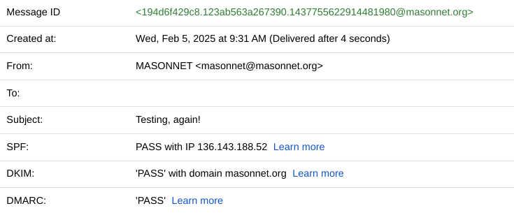

A real MASONNET email will look like this:
Notice how it isn't marked as spam, and that it has the official MASONNET email signature.
Here's a few other factors to look for:
Check the email address and make sure it's from @masonnet.org. Only real MASONNET emails will come from @masonnet.org.
Click "show original", and make sure that SPF, DKIM, and DMARC pass. They will on real MASONNET emails.
Check the contents of the email. If there are spelling mistakes, or if somebody is asking you to buy gift cards, or send money, it's a fake email. We will never ask you to send payments to us via email. This is only done on official MASONNET websites/stores.
If you're still unsure, send a screenshot of the email to us at masonnet@masonnet.org, and we will verify if we sent it or not.